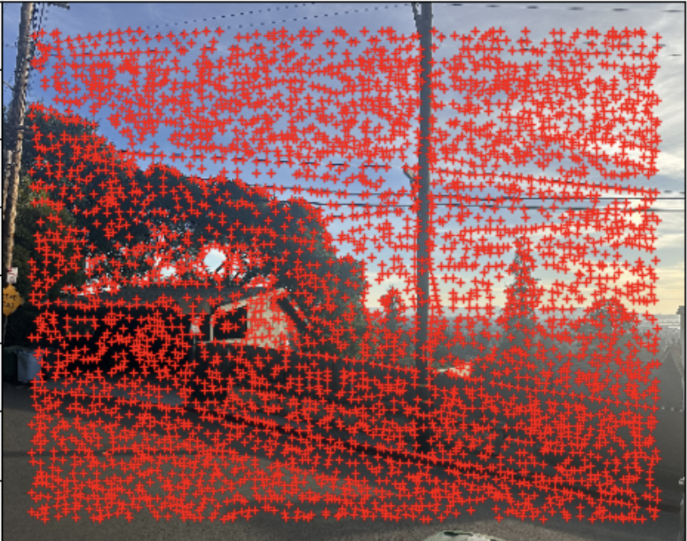
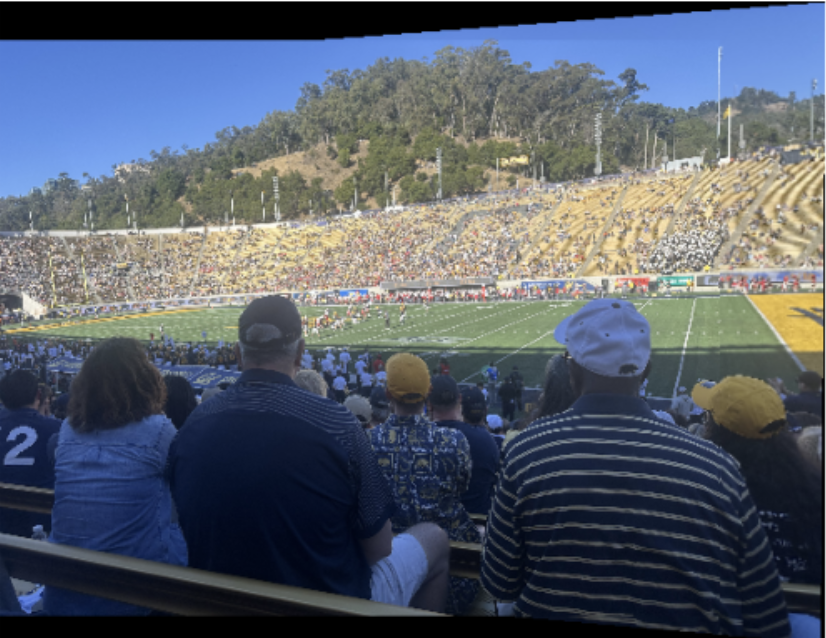

IMAGE WARPING and MOSAICING
The goal of this project was to experiment with different aspects of image warping and create a seamless image mosaic by registering, projective warping, resampling, and compositing multiple images.
Part A:
Overview
In this project, I implement image stitching and rectification techniques to create panoramic images and rectify planar surfaces in images. The key steps involve recovering homographies, warping images, performing image rectification, and blending images into a mosaic.
Step 1: Shooting and Digitizing Pictures
I started by capturing two photographs of 3 scenes that have a significant overlap, ensuring a good basis for mosaicing. I also ensured a significant overlap of 40% to 70% between each photo to facilitate registration. I took these photos of the stadium and sunset while on a run., the photo inside the stadium during the NC State game.


Figure 1: Photos captured for mosaicing


Figure 1: Photos captured for mosaicing


Figure 1: Photos captured for mosaicing
Step 2: Recovering Homographies
To align the images, I computed homographies by manually selecting point correspondences between pairs of images. I developed a function to calculate the 3x3 homography matrix H using the least-squares method, given more than four point correspondences. Establishing accurate correspondences was crucial to avoid instability in the transformation.
# Compute homography matrix H
H = computeH(points_img1, points_img2)

Figure 2: Recovered homography matrix illustration
Step 3: Warping Images
Once the homographies were calculated, I used them to warp each image to align with the reference image. I implemented an image warping function using inverse warping and ensured resampling was smooth to avoid aliasing. I used grid interpolation techniques for an accurate warping result, and I rectified images to verify the homography correctness.
# Warp image using homography H
warped_im, alpha_mask, x_min, y_min, transformed_corners = warpImage(im, H)

Figure 3: First example of image warping and rectification


Figure 3: First example of image warping and rectification
Step 4: Blending Images into a Mosaic
After warping the images into alignment, I blended them into a single mosaic. I initially tried averaging, but since it wasn't working, I ended up using the Laplacian pyramid functions from the previous projects to avoid harsh edges and create a smooth blend.
Figure 1: Photos captured for mosaicing

Figure 4: Image mosaic blending process
I also did it again on a couple more images
Figure 1: Photos captured for mosaicing
Figure 4: Image mosaic blending process
This next one didnt work out as well due to the difference in lighting from the two images/p>
Figure 1: Photos captured for mosaicing

Figure 4: Image mosaic blending process
Bugs and Challenges
During the implementation, I encountered some challenges:
- Misalignment of Images: Initially, the images were not aligning correctly in the mosaic due to incorrect offset calculations. I resolved this by computing the overall bounding box of both images and adjusting the offsets accordingly.
- Point Selection Issues: Simultaneous point selection on both images caused confusion and incorrect point mapping. I modified the point selection process to be sequential, ensuring accurate correspondence between points.
- Broadcasting Errors: While blending images, I faced broadcasting errors due to mismatched array shapes. Adjusting the indexing and ensuring compatible shapes resolved this issue.
Conclusion
By implementing homography estimation, image warping, and blending techniques, I successfully created panoramas and performed image rectification. This project demonstrates fundamental concepts in computer vision and image processing.
Part B:
Step 1: Harris Corners
In this step, I utilized the provided function to perform Harris Corner Detection on each image to identify key interest points. The Harris Corner Detector is a fundamental algorithm in computer vision used to detect corners within an image.
The Harris Corner Detector works by analyzing the intensity gradients of the image to find regions where the intensity changes significantly in all directions, which typically correspond to corners. It computes the gradient of the image in both the x and y directions to form the second moment matrix at each pixel. This matrix captures the variation of intensity around a pixel. By calculating a corner response function from the eigenvalues of this matrix, the detector assigns a "cornerness" score to each pixel.
However, the raw output from the Harris Detector often results in a high density of detected corners, many of which may be clustered closely together. To address this, I implemented Adaptive Non-Maximal Suppression (ANMS). ANMS selects a subset of the strongest corners that are also well-distributed across the image. It does this by calculating a suppression radius for each corner based on its strength relative to neighboring corners. Corners that are too close to a stronger corner are suppressed. This ensures that the selected corners are both significant and spatially diverse, which is beneficial for the subsequent feature matching process.
Original Image / Image with 1000 Harris Corners / Image after ANMS Supression
Original Image / Image with Harris Corners / Image after ANMS Supression

Original Image / Image with Harris Corners / Image after ANMS Supression
Step 2: Feature Detection
After identifying the key interest points, I extracted feature descriptors around each of these points to capture the local image information. For each corner, I took a 40x40 pixel window centered on the corner and applied a Gaussian blur to reduce noise and minor misalignments. From this smoothed window, I extracted an 8x8 pixel patch to serve as the feature descriptor. This downsampling helps in achieving some level of scale invariance and reduces the dimensionality of the descriptor.
To ensure that the descriptors are robust to changes in illumination, I performed bias and gain normalization. This involved subtracting the mean pixel value and dividing by the standard deviation for each descriptor, resulting in descriptors with zero mean and unit variance. These normalized descriptors are more reliable for matching, as they are less affected by lighting differences between images.
Step 3: Feature Matching
With the feature descriptors extracted, the next step was to match features between pairs of images. I compared each descriptor from one image with all descriptors from the other image by computing the sum of squared differences (SSD). To improve the robustness of the matching, I employed Lowe's ratio test. This test involves finding the two nearest neighbors for each descriptor and computing the ratio of the SSD of the closest match to the SSD of the second closest match.
If this ratio is below a certain threshold (as suggested by Lowe, typically around 0.7 to 0.8), the match is considered good because it indicates that the closest match is significantly better than the next best. This helps to filter out ambiguous matches where a descriptor might be equally similar to multiple descriptors in the other image. By applying this ratio test, I obtained a set of reliable feature correspondences between the images.
Stadium with Feature Matching
Inside Stadium with Feature Matching
Sun with Feature Matching
Step 4: RANSAC Homography
Using the matched feature points, I estimated the homography transformation between the images using the RANSAC (Random Sample Consensus) algorithm. RANSAC is an iterative method that is robust to outliers in the data. In each iteration, it randomly selects a minimal subset of correspondences (in this case, four pairs of points) to compute a candidate homography.
This candidate homography is then used to transform all the feature points from one image to the coordinate system of the other image. I counted the number of inliers, which are points where the transformed points are within a certain error threshold of the actual matched points. The process repeats for a predefined number of iterations, and the homography with the highest number of inliers is selected as the best estimate.
By using RANSAC, I was able to robustly estimate the homography despite the presence of outliers due to incorrect matches or moving objects. This homography captures the perspective transformation between the two images, which is crucial for accurate image alignment.
Step 5: Mosaics
With the homography estimated, I proceeded to warp one image into the coordinate frame of the other using the computed homography matrix. For this step, I utilized the image warping function developed in Part A of the project.
After warping, I blended the images to create a seamless mosaic. I employed the same blending techniques from Part A, specifically the Laplacian pyramid blending function. This method blends the images across multiple frequency bands, which helps to smooth out the transition regions and handle differences in exposure or lighting between the images. Using the blending functions from the previous part allowed me to create a smooth and visually appealing mosaic without harsh edges or noticeable seams, except for the sunset picture which had a differnce in lighting between the two photos..
By automating the feature detection, matching, and homography estimation processes, and leveraging the functions developed earlier, I successfully created panoramas without manual intervention.
Stadium Mosaic Manual / Automatic

Inside Stadium Mosaic Manual / Automatic
Sun Mosaic Manual / Automatic
What have I learned?
The coolest thing I learned during this project was definitely feature matching. When I finally got the feature matching algorithm working, I was genuinely surprised at how effective it was. Seeing the algorithm automatically find corresponding points between two images without any manual input was astounding. It was incredibly satisfying to see the matched features lining up perfectly and contributing to a seamless mosaic.